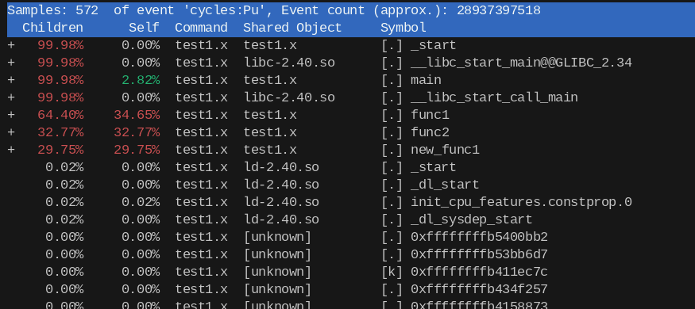
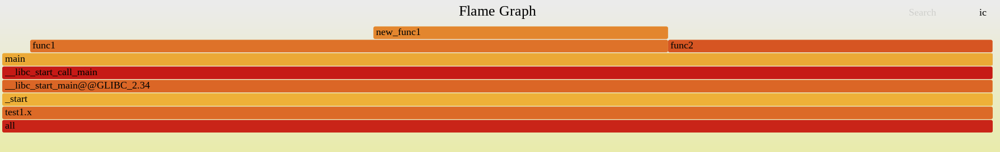
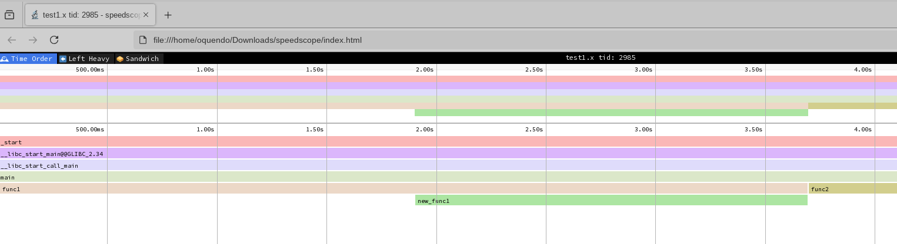
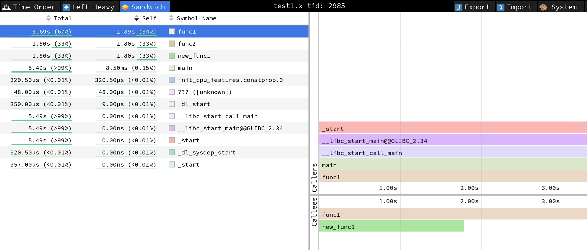
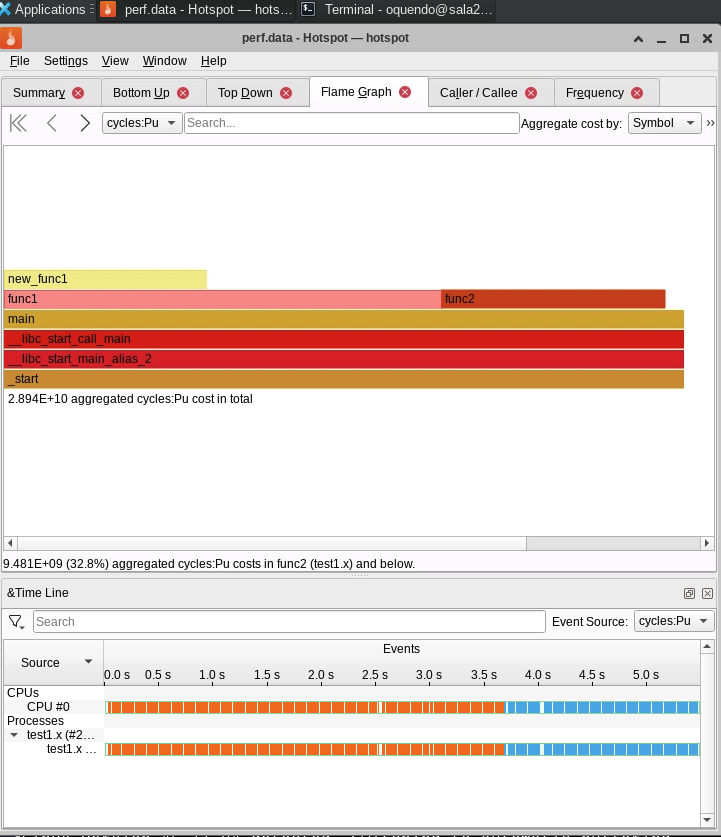
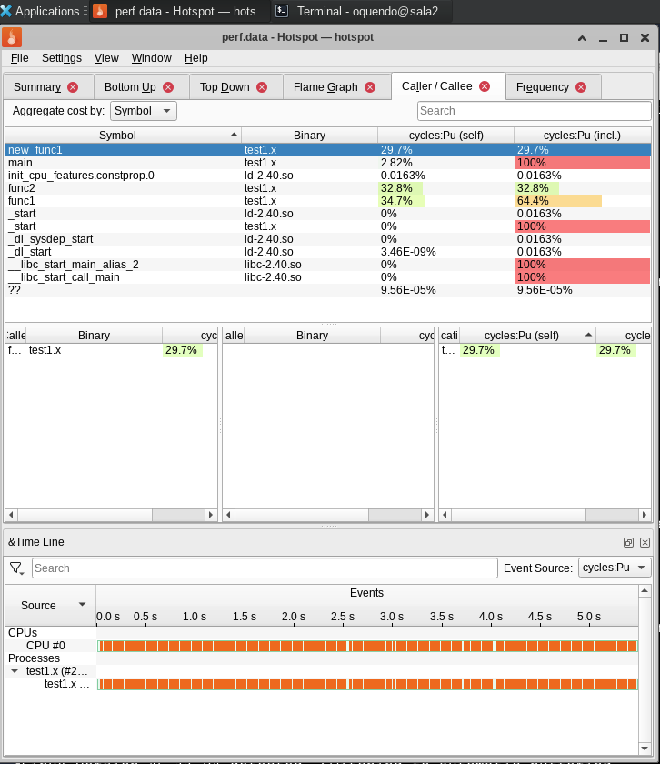

10. Profiling#
After debugging your code and writing several tests to avoid repeating the same bug, you want to start optimizing it to make it fast (but keeping it correct). To do this, you need to measure. You need to detect functions which take most of the time. Optimizing a function that takes only 5% of the time will give you only marginal benefits. Finding the functions that take most of the time is called profiling , and there are several tools ready to help you. In the following we will learn to use these tools to detect the hotspots/bottlenecks in our codes. Please keep in mind tha Computers are fast, but your code might not be using all the resources in an efficient way.
10.1. Why profile?#
Profiling allows you to learn how the computation time was spent and how the data flows in your program. This can be achieved by just printing the time spent on each section using some internal timers, or, better, by using a tool called “profiler” that shows you how time was spent in your program and which functions called which other functions.
Using a profiler is something that comes very handy when you want to verify that your program does what you want it to do, especially when it is not easy to analyze (it may contain many functions or many calls to different functions and so on).
Remember, WE ARE SCIENTISTS, so we want to profile code to optimize the computation time taken by our program. The key idea then becomes finding where (which function/subroutine) is the computation time spent and attack it using optimization techniques (studied in a previous session of this course.
10.2. Measuring the whole running time#
Take the following code as example (from thehackerwithin/PyTrieste)
#include <cstdio>
#include <cstdlib>
/*
Tests cache misses.
*/
void option1(long * data, int m, int n);
void option2(long * data, int m, int n);
void option3(long * data, int m, int n);
int main(int argc, char **argv)
{
if (argc < 3){
printf("Usage: cacheTest sizeI sizeJ\nIn first input.\n");
return 1;
}
long sI = atoi(argv[1]);
long sJ = atoi(argv[2]);
printf("Operating on matrix of size %ld by %ld\n", sI, sJ);
long *arr = new long[sI*sJ]; // double array.
// option 1
option1(arr, sI, sJ);
// option 2
option2(arr, sI, sJ);
// option 3
option3(arr, sI, sJ);
// why this?
printf("%ld\n", arr[0]);
// free memory
delete [] arr;
return 0;
}
void option1(long * data, int m, int n)
{
for (long i=0; i < m; ++i)
for (long j=0; j < n; ++j)
data[(i * (n)) + j ] = i;
}
void option2(long * data, int m, int n)
{
for (long i=0; i < m; ++i)
for (long j=0; j < n; ++j)
data[(j * (m)) + i ] = i;
}
void option3(long * data, int m, int n)
{
for (int i=0; i < m*n; ++i) data[i] = i;
}
Read it and try to understand what it does. Now, compile and run it.
If you want to measure the while running time against the matrix size, you can use the commands time or /usr/bin/time:
/usr/bin/time ./a.out 4000 8000
This will give you the total running clock time of the program. This is useful if the code is dominated by the computing part, not the memory allocation or similar things. Run it several times per size and observe the fluctuations.
But, if you need to measure a more specific part of your code, it is much better to measure those parts directly.
10.3. Measuring elapsed time#
The first approach is to just add timers to your code. This is a good
practice and it is useful for a code to report the time spent on
different parts. We will use the previous example and add watches at specific points, using std::chrono (you can see
more examples https://www.techiedelight.com/measure-elapsed-time-program-chrono-library/ and https://en.cppreference.com/w/cpp/chrono/duration. This allows to measure the clock time, not the cpu time (look for the differences …) . Notice that high_resolution_clock is implementation defined, so it can be aliases to system_clock, which is not guaranteed to be steady. Beter use the steady_clock.
An example to use a timer is
auto start = std::chrono::steady_clock::now();
option1(...);
auto end = std::chrono::steady_clock::now();
std::cout << (end-start).count() << "\n"; // prints the time diff in arbitrary units
10.3.1. Exercise#
Add timers for all the previous function calls, including the memory allocation and freed. Improve to print the actual time in seconds. Compare with the total time. Compile and run it . Now you have much better results, the granularity has increased and now you know where the code is spending most of the time. Analyze the results.
10.3.2. Exercise#
Plot the time average time per option as function of the matriz size (use square matrices of size nxn, plot againts n). Explain the differences in complexity.
10.4. Profilers#
There are many types of profilers from many different sources, commonly, a profiler is associated to a compiler, so that for example, GNU (the community around gcc compiler) has the profiler ‘gprof’, intel (corporation behind icc) has iprof, PGI has pgprof, etc. Valgrind is also a useful profiler through the cachegrind tool, which has been shown at the debugging section. There is also a very famous and important profile in linux, perf, which can help to generate flame graphs.
This mini tutorial will focus on using gprof. Note that gprof supports (to some extend) compiled code by other compilers such as icc and pgcc. At the end we will briefly review perf, and the google performance tools.
FACT 1: According to Thiel, “gprof … revolutionized the performance analysis field and quickly became the tool of choice for developers around the world …, the tool is still actively maintained and remains relevant in the modern world.” (from Wikipedia).
FACT 2: Top 50 most influential papers on PLDI (from Wikipedia).
Here we will check some utilities like gprof, perf, and valgrind. But please notice that there are some other alternatives like
tracy: https://github.com/wolfpld/tracy
Papi (Performance api), https://icl.utk.edu/papi/
Perfetto, a solution provided by google: https://perfetto.dev/
memray, a python profiler : https://github.com/bloomberg/memray
The list is very large: https://en.wikipedia.org/wiki/List_of_performance_analysis_tools?useskin=vector
In the following we will see some simple introductions to some of these tools.
10.5. An introduction to gprof#
The gnu profiler, gprof, works pretty well with the gnu tools and allows to you to get a peerformance profile for your programs. To do so, the general approach is to
Compile with the flag
-pg
gcc -Wall -pg -g test_gprof.c -o test_gprof.x
Execute normally. This will create or overwrite the file
gmon.out./test_gprof.x
Process the report as
gprof test_gprof.x gmon.out > analysis.txt
This produces a file called ‘analysis.txt’ which contains the profiling information in a human-readable form. The output of this file is like the following:
Flat profile:
Each sample counts as 0.01 seconds.
% cumulative self self total
time seconds seconds calls s/call s/call name
39.64 9.43 9.43 1 9.43 16.79 func1
30.89 16.79 7.35 1 7.35 7.35 new_func1
30.46 24.04 7.25 1 7.25 7.25 func2
0.13 24.07 0.03 main
% the percentage of the total running time of the
time program used by this function.
...
Call graph (explanation follows)
granularity: each sample hit covers 2 byte(s) for 0.04% of 24.07 seconds
index % time self children called name
<spontaneous>
[1] 100.0 0.03 24.04 main [1]
9.43 7.35 1/1 func1 [2]
7.25 0.00 1/1 func2 [4]
-----------------------------------------------
9.43 7.35 1/1 main [1]
[2] 69.7 9.43 7.35 1 func1 [2]
7.35 0.00 1/1 new_func1 [3]
-----------------------------------------------
7.35 0.00 1/1 func1 [2]
[3] 30.5 7.35 0.00 1 new_func1 [3]
-----------------------------------------------
7.25 0.00 1/1 main [1]
[4] 30.1 7.25 0.00 1 func2 [4]
-----------------------------------------------
This table describes the call tree of the program, and was sorted by
the total amount of time spent in each function and its children.
...
Index by function name
[2] func1 [1] main
[4] func2 [3] new_func1
The output has two sections:
Flat profile: The flat profile shows the total amount of time your program spent executing each function.
Call graph: The call graph shows how much time was spent in each function and its children.
To create flamegraphs, you can try to setup a complicated script to transform the gprof output into something readable by the flamegraphs scripts, or better use perf.
10.5.1. Exercise#
Create the gprof analysis for the previous code. Where would you focus your efforts to optimize this program?
10.5.2. Exercise#
Create the gprof analysis for the following code. Where would you focus your efforts to optimize this program?
//test_gprof.c
#include<stdio.h>
void new_func1(void);
void func1(void);
static void func2(void);
void new_func1(void);
int main(void)
{
printf("\n Inside main()\n");
int i = 0;
for(;i<0xffffff;i++);
func1();
func2();
return 0;
}
void new_func1(void);
void func1(void)
{
printf("\n Inside func1 \n");
int i = 0;
for(;i<0xffffffff;i++);
new_func1();
return;
}
static void func2(void)
{
printf("\n Inside func2 \n");
int i = 0;
for(;i<0xffffffaa;i++);
return;
}
void new_func1(void)
{
printf("\n Inside new_func1()\n");
int i = 0;
for(;i<0xffffffee;i++);
return;
}
10.6. An introduction to perf#
perf is powerful: it can instrument CPU performance counters, tracepoints, kprobes, and uprobes (dynamic tracing). It is capable of lightweight profiling. It is also included in the Linux kernel, under tools/perf, and is frequently updated and enhanced. (from https://perf.wiki.kernel.org/index.php/Main_Page)
More about perf: https://www.brendangregg.com/perf.html , https://www.swift.org/documentation/server/guides/linux-perf.html
It can also ve used in other languages, like python https://docs.python.org/3/howto/perf_profiling.html
An example of fixing a program using perf: https://pkolaczk.github.io/server-slower-than-a-laptop/
10.6.1. Installing perf#
Perf is a kernel module, so you will need to install it from the kernel source. As root, the command used to install perl in the computer room was (this needs root privileges)
cd /usr/src/linux/tools/perf/; make -j $(nproc); cp perf /usr/local/bin
This will copy the perf executable into the path.
10.6.2. Using perf#
Perf is a hardware counter available on linux platforms. NOTE: It is recommended to compile with -fno-omit-frame-pointer
Its use is very simple: Just run, For a profile summary,
perf stat ./a.out > profile_summary
For gprof-like info, use
perf record ./a.out
perf report
This will generate something like
{kind=link}
There are several command options
perf stat: obtain event countsperf record: record events for later reportingperf report: break down events by process, function, etc.perf annotate: annotate assembly or source code with event countsperf top: see live event countperf bench: run different kernel microbenchmarks
Check https://perfwiki.github.io/main/tutorial/ for more.
10.6.3. Flamegraphs#
To generate a flamegraphs, you can use the scripts at brendangregg/FlameGraph. Let’s assume that you have clone that repo inside the Downloads/ directory.
cd ~/Downloads/
git clone https://github.com/brendangregg/FlameGraph
First you need tor run perf, like (perf arg -a requires kernel profile capability)
perf record --call-graph dwarf -F 99 -g -- command arg1 arg2 ...
This command will generate a perf.data file in your current directory.
Then you need to transform the perf.data data into a human readable file
perf script > out.perf
Now fold the stacks, to collapse identical calls
~/Downloads/FlameGraph/stackcollapse-perf.pl ./out.perf > out.folded
And, finally, generate the flamegraph
~/Downloads/FlameGraph/flamegraph.pl out.folded > flamegraph.svg
Open it with firefox or inkscape. You will get something like
{kind=link}
As you can see, the width is proportional to the time.
10.6.4. Exercise#
Generate the flamegraph for the previous code
10.7. Some guis for perf#
10.7.1. Speedscope#
It can load the perf.data file and visualize it. Go to https://www.speedscope.app/ and load your perf data. You can also go to the repo and download a local installation to be able to run all locally. It will show you something like
Flamegraph:
{kind=link}
Callgraph:
{kind=link}
10.7.1.1. Hotspot#
Please see KDAB/hotspot and https://www.kdab.com/hotspot-video/.
Install with the appimage: Download it from the releases at KDAB/hotspot. Then, make it executable
chmod +x ~/Downloads/hotspot-v1.5.1-x86_64.AppImage
And, finally, run it. If you run it from the same directoy with the perf data, it will automatically load it, giving you all the data in a uniform gui.
 {kind=link}
{kind=link}
NOTE: In the computer room you can also use spack:
spack load hotspot-perf
And then just use the command hotspot .
10.7.2. Exercise#
Create a flamegraph visualzation using both speedscope and hotspot.
10.8. Profiling with valgrind: cachegrind and callgrind#
Valgrind allows not only to debug a code but also to profile it. Here we will see how to use cachegrind, to check for cache misses, and callgrind, for a calling graph much like tools like perf and gprof.
10.8.1. Cache checker : cachegrind#
From cachegrind
Cachegrind simulates how your program interacts with a machine’s cache hierarchy and (optionally) branch predictor. It simulates a machine with independent first-level instruction and data caches (I1 and D1), backed by a unified second-level cache (L2). This exactly matches the configuration of many modern machines.
However, some modern machines have three levels of cache. For these machines (in the cases where Cachegrind can auto-detect the cache configuration) Cachegrind simulates the first-level and third-level caches. The reason for this choice is that the L3 cache has the most influence on runtime, as it masks accesses to main memory. Furthermore, the L1 caches often have low associativity, so simulating them can detect cases where the code interacts badly with this cache (eg. traversing a matrix column-wise with the row length being a power of 2).
Therefore, Cachegrind always refers to the I1, D1 and LL (last-level) caches.
To use cachegrind, you will need to invoke valgrind as
valgrind --tool=cachegrind prog
Take into account that execution will be (possibly very) slow.
Typical output:
==31751== I refs: 27,742,716
==31751== I1 misses: 276
==31751== LLi misses: 275
==31751== I1 miss rate: 0.0%
==31751== LLi miss rate: 0.0%
==31751==
==31751== D refs: 15,430,290 (10,955,517 rd + 4,474,773 wr)
==31751== D1 misses: 41,185 ( 21,905 rd + 19,280 wr)
==31751== LLd misses: 23,085 ( 3,987 rd + 19,098 wr)
==31751== D1 miss rate: 0.2% ( 0.1% + 0.4%)
==31751== LLd miss rate: 0.1% ( 0.0% + 0.4%)
==31751==
==31751== LL misses: 23,360 ( 4,262 rd + 19,098 wr)
==31751== LL miss rate: 0.0% ( 0.0% + 0.4%)
The output and more info will be written to cachegrind.out.<pid>,
where pid is the PID of the process. You can open that file with
valkyrie for better analysis.
The tool cg_annonate allows you postprocess better the file
cachegrind.out.<pid>.
Compile the file cacheTest.cc,
$ g++ -g cacheTest.cc -o cacheTest
Now run valgrind on it, with cache checker
$ valgrind --tool=cachegrind ./cacheTest 0 1000 100000
Now let’s check the cache-misses per line of source code:
cg_annotate --auto=yes cachegrind.out.PID
where you have to change PID by the actual PID in your results.
Fix the code.
More cache examples
Please open the file
cache.cppwhich is inside the directory valgrind. Read it. Comment the linestd::sort(data, data + arraySize);
Compile the program and run it, measuring the execution time (if you wish, you can use optimization):
$ g++ -g cache.cpp -o cache.x $ time ./cache.x
The output will be something like
26.6758 sum = 312426300000 real 0m32.272s user 0m26.560s sys 0m0.122s
Now uncomment the same line, re-compile and re-run. You will get something like
5.37881 sum = 312426300000 real 0m6.180s user 0m5.360s sys 0m0.026s
The difference is big. You can verify that this happens even with compiler optimisations enabled. What it is going on here?
Try to figure out an explanation before continuing.
Now let’s use valgrind to track the problem. Run the code (with the sort line commented) with cachegrind:
$ valgrind --tool=cachegrind ./a.out
And now let’s annotate the code (remember to change PID for your actual number):
cg_annonate --auto=yes cachegrind.out.PID
We can see that we have something similar to stackoverflow analysis
Understand why.
10.8.2. Callgrind#
Now, we are using valgrind to get a calling profile by using the tool
callgrind. It is done as follows: Use the same program as in other
modules. First, compile with debugging enabled, something like
gcc -g -ggdb name.c -o name.x
and now execute with valgrind as
valgrind --tool=callgrind name.x [possible options]
Results will be stored on the files callgrind.out.PID, where PID is
the process identifier.
You can read the previous file with a text editor, by using the instructions
callgrind_annotate --auto=yes callgrind.out.PID
and you can also use the tool KCachegrind,
kcachegrind callgrind.out.PID
(do not forget to replace PID by the actual number). The first view presents the list of the profiled functions. If you click on a function, other views appear with more info, as callers, calling map, source code, etc.
NOTE: If you want to see correct function names, you can use the command
valgrind --tool=callgrind --dump-instr=yes --collect-jumps=yes ./program program_parameters
Please run and use callgrind to study the previous programs and also a program using eigen library. In the later, it is easy to profile?
This is a typical output from the kcachegrind page:

10.9. Google Performance Tools#
From Google performance tools : These tools are for use by developers so that they can create more robust applications. Especially of use to those developing multi-threaded applications in C++ with templates. Includes TCMalloc, heap-checker, heap-profiler and cpu-profiler.
In brief:
TC Malloc:
gcc [...] -ltcmalloc
Heap Checker:
gcc [...] -o myprogram -ltcmalloc
HEAPCHECK=normal ./myprogram
Heap Profiler:
gcc [...] -o myprogram -ltcmalloc
HEAPPROFILE=/tmp/netheap ./myprogram
Cpu Profiler:
gcc [...] -o myprogram -lprofiler
CPUPROFILE=/tmp/profile ./myprogram
Basically, when ypu compile, you link with the required library. Then, you can generate a callgraph with profiler info. Try to install the google performance tool on your home and test them with the previous codes. Please review the detailed info for each tool: for example, for the cpu profiler, check Cpu profiler info
10.10. Exercises#
Take this code and modify it (separate its behaviour into functions) to be able to profile it.
Download https://bitbucket.org/iluvatar/scientific-computing-part-01/downloads/CodigosIvan.zip, run , and optimize them.
Experiment: Take this code, profile it and try to optimize it in any way.